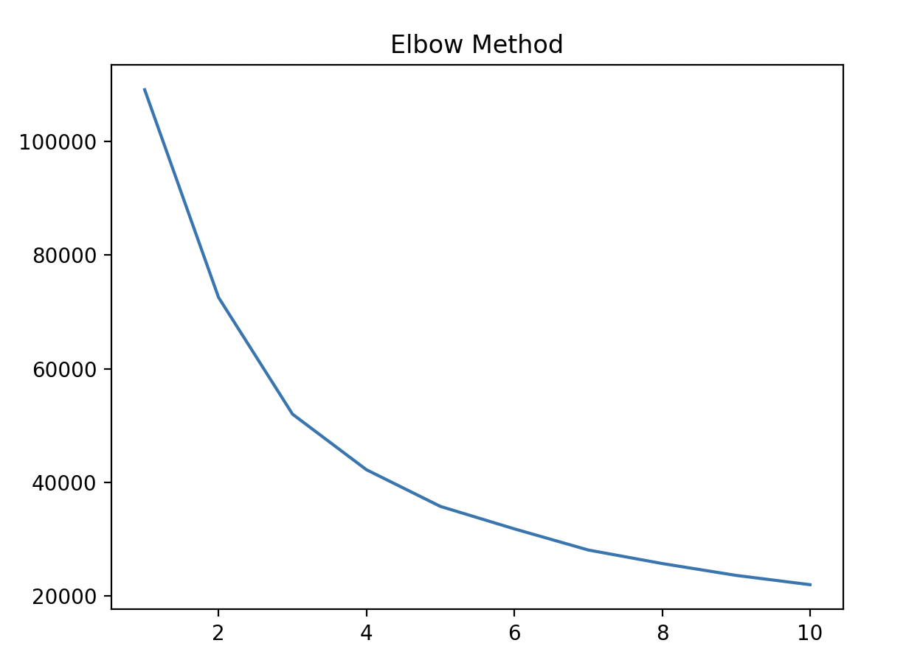
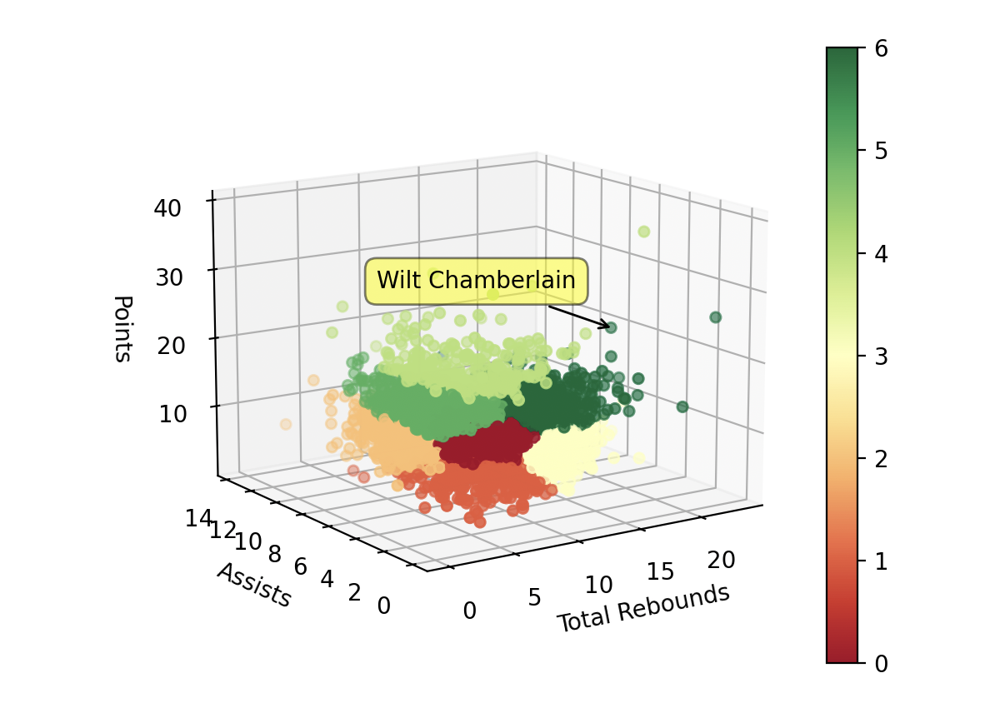

The Problem
The intention I have for this experiment is to group NBA players based on their stats. Grouping players by stats can provide very valuable insights on the game. There is a debate throughout sports on statistics vs the "eye test" which is basically traits that don't show up on a stat sheet. I want to generalize players impacts on the floor using the major basketball stats including points, assists, rebounds, and shooting percentage.
What is clustering?
Clustering is an unsupervised learning method that attempts to group data points with other similarly placed data points. The two most common clustering algorithms are k-means and agglomerative. For this project, I'll be using k-means. K-means clustering groups the dataset into "k" clusters, hence the name. It works by creating "k" points, which are the centers for each cluster. Once this step is complete, all the cluster points get averaged to create a new center point. Then the process repeats until no changes occur from the center point and all the data points stick with a relative cluster.
The Data
I found the data on Kaggle in a dataset called NBA Stats, which has tons of stats from scraping Basketball Reference. The three main datasets from the NBA Stats folder I was interested in were Player per game, Per 36 minutes, and Per 100 Possessions. Player per game would give the average stats for a player per game for a season. Per 36 minutes would give me the average stats for every 36 minutes played, and Per 100 Possessions would give me the average player stats for every 100 times their team had possession of the ball.
The one I chose was Per 36 Minutes. This would give me the best results if I wanted to ignore how many minutes they were given per game. Someone that plays 40 minutes per game is obviously going to have more stats than someone that plays 10 minutes per game. Inside of Per 36 Minutes, I decided to use points, total rebounds, assists, and field goal percentage.
Visualizing the Data

I plotted the data in a 3d scatter, with the 3 axes being points, rebounds, and assists. Since I chose to use field goal percentage as a 4th dimension, I decided to display that through color. From a scale of red to green, with red being a bad field goal percentage and green being a good one. Since there are over 7,000 nba players plotted on this graph, it has heavily clustered. Most of the cluster is near the coordinates 0, 0, 0, because most people that played in the nba were not stars and did not have major roles in the output of the team.
Pre-Proccessing
There were a lot of pre-processing steps I had to follow for this experiment. First, they did not keep track of player minutes before the 1951-1952 season. So every player before that period had null data, which I had to remove. There were nulls in other stats, such as blocks, steals, etc. since more stats were kept track of in the 70s. All of the stats I am using for this project were kept after 1951 though.
Also, since I wanted a player's career averages and the dataset provides yearly averages, I had to convert the data myself. I had to find the mean for the stats of a player for each season they played to get their career average. Once I did that, the dataset was ready to go.
The Clusters
I chose to use k-means for this project, because I wanted to have full control over the amount of clusters created. I also wanted to have equally sized cluster which k-means can handle well. Another benefit is that it is simple and I've used it before, so it is my personal preference.
By using K-means clustering, I had to decide how many clusters I wanted to create. The method I used to figure this out is the elbow method. The elbow method uses the within-cluster sum of squares value for each k-value to determine the optimal amount of clusters. I created the figure above, but I wasn't satisfied with the created elbow, so I decided to add more k-values because of the large size of the dataset.

With this figure above, I was able to get a better idea of how many clusters are optimal. I decided to choose 7 clusters, as k=7 is the closest thing there is on the figure to an elbow. Seven clusters also is enough to have variety in the clusters in the graph.
Model Analysis
I really enjoyed observing the model and hovering over the points of players I know and where they go on the scatter. Each individual cluster tells a story. For example, the lime green cluster includes most of the well known greatest scorers of all time. It includes players such as Michael Jordan, Joel Embiid, Kevin Durant, Bob Petit, and many more.
Then there is the cream cluster. The cream cluster doesn't average many points or assists, but they have a role on their team because they are great rebounders. A definitive member of this group is Dennis Rodman, who is arguably one of the best rebounders to ever play the game. He was not out there for his offensive ability, but his rebounding skill kept him on the floor. Other examples in this cluster are Steven Adams, Bismack Biyombo, and Noah Vonleh.
The dark green cluster is similar to the cream cluster, but the players in this category average much more points. The players in this category are commonly dominant centers, who average high rebounds, pretty high points, and low assists. Some notable players in this cluster are Dwight Howard, Wilt Chamberlain, Andre Drummond, and Hassan Whiteside.
The dark red cluster includes players who have very little assists, a decent amount of points, and a decent amount of rebounds. While looking through the names in this cluster, I noticed most of the players are role playing wings. Role playing wings don't handle the ball too much and often lie more towards the perimeter. Even though they often stay out of the paint, their size can still lead them to get some rebounds. Examples of players in this cluster are Robert Covington, Nicholas Batum, Bruce Brown, and Yuta Watanabe.
The peach cluster is mostly players that have a high assist count. They score a little bit and get very little rebounds, but the scoring that they create makes them very valuable to have on the floor. Most of these players are point guards, because assisting is their primary purpose. Examples of players in this cluster are John Stockton, Jason Kidd, Mark Jackson, Rajon Rondo, and Ricky Rubio.
References
Geeksforgeeks: Elbow Method for optimal value of k in KMeans